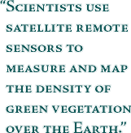

Le projet Cansat 2012, c'est la réalisation d'un satellite de taille miniature, suffisement petit pour tenir dans une canette de 33 cL.
Institut d'Optique Graduate School
à propos du projet
Tout commenca peu avant l'été 2011, Lionel J. informe l'amphi des 1A de trois projets d'intérêt majeur qu'on pourrait réaliser l'année suivante. Parmi ces projets il y avait l'idée d'un Cubesat. Un Cubsat est un satellite de taille miniature qui est embarqué dans l'espace vacant de certaines fusées telles qu'Ariane 5. Cet espace vacant est parfois mis à la disposition d'Universités et d'entreprises. Et son utilisation donne lieu à une compétition.
Denis est un geek infatigable, en américain, on dirait plutôt que c'est un nerd. J'avoue que s'il ne m'avait pas suivi dans cette aventure, le projet serait mort-né. Outre son implication quotidienne, il nous sera d'une aide considérable au moment de programmer la fameuse carte Arduino.
Clément Javerzac
Il ne se passe pas un jour sans que Clément ne me dise: "Il me tarde de manipuler les composants". Et à l'inverse de nous deux, Clément a beaucoup de facilités à communiquer, c'est peut-être cette raison qu'il est le secrétaire d'Optoservices.
Zubair Iftikhar
On m'a toujours dit de se citer en dernier dans une liste. Alors vous l'aurez compris, je suis l'auteur de ce site.
Les missions
Pour le concours, nous devons réaliser deux missions, parmi lesquelles une est libre. Nous avions quelques idées folles pour la mission libre. On pensait par exemple mesurer la vitesse de la lumière par effet Doppler, ou utiliser une sorte d'interféromètre de Fizeau pour mesurer l'accélération verticale (dans le référentiel du CanSat) en mesurant la position d'une lame réfléchissante libre par rapport à une lame fixe.

Notre enseignant-tuteur nous a conseillé de rencontrer Jean T. pour avoir de nouvelles idées de mission libre. Ce dernier nous a parlé de la mesure de l'indice de chlorophile. Pour effectuer cette mesure il suffit de calculer le contraste entre deux images d'une même scène; l'une étant prise après un filtre infra-rouge et l'autre étant prise dans le domaine visible.
Agenda
15 novembre 2011
Mise en ligne du règlement du concours de l'année 2012.
Contact
Pour plus d'informations n'hésitez pas nous contacter à l'adresse cansat2012@supop.fr.
Vous pouvez croire que ce site n'est pas très esthétique. C'est sans doute vrai, mais essayez tout de même d'utiliser un navigateur récent tel que Mozilla Firefox. En effet, ce site a été réalisé avec les dernières technologie du web, et il nécessite un navigateur récent.